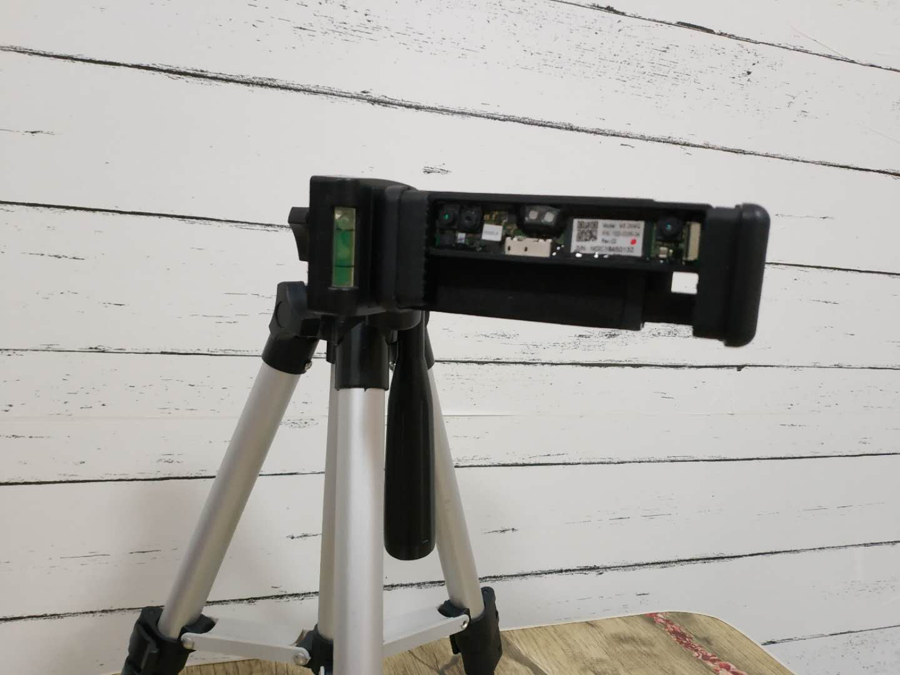

3D Face : A cross-platform face reconstruction application
|
|
 |
| With Texture
| White Model
| Texture
|
D Face is a face reconstruction application that can be expand to various kinds of depth cameras. Users can be allowed to automatically
capture facial data by rotating face in front of the camera, and use multi-frame alignment
technology to merge the geometric and texture data from each angle of the human face, and outputs a more complete
human face model in a short period of time. Both the mobile and the PC versions of this algorithm have been implemented.
On PC, the procedure takes 300ms, on mobile phone the procedure takes 3s.
Choice of Depth Camera
|  |
 |
|
|
Our algorithm can output face model with rich details using low cost depth camera, such as kinect or embeded depth camera on mobile phone,
which cannot capture subtle 3D feature of face.
The depth information from multiple angle will be automatically aligned to make a coarse contour of human face, then more detial will be
retrieved from texture.
Multi-Angle Data Capture
Our algorithm will automatically capture appropriate data from certain angle of user's face, all user needs to do
is keep rotating face in front of camera. Our algorithm will automatically determine the posture of user's face, and
record data. The data will be aligned and merged in a fast way to make full model of user's face.
Depth Refinement
With coarse model generated in formal stages, the depth refinement algorithm takes raw noisy depth data and an aligned RGB image as input,
and approximates the varying incident lighting, which is then used for geometry refinement. The lighting model we
use can handle natural scene illumination. It is integrated in a shape from shading like technique to improve the
visual fidelity of the reconstructed object.
|
|
| Coarse Model
| Refined Model
|